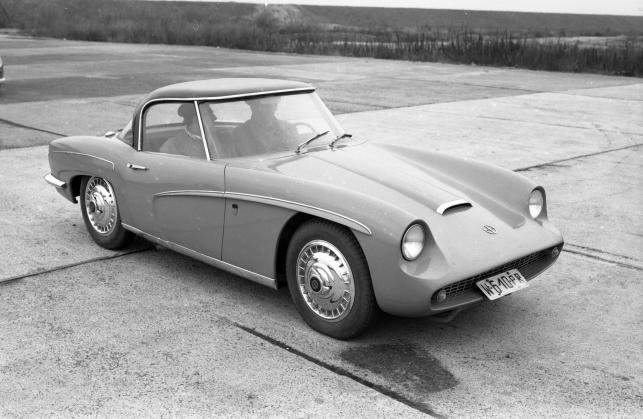
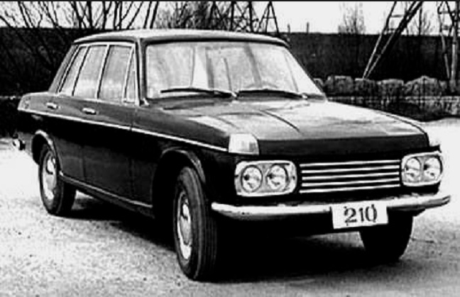
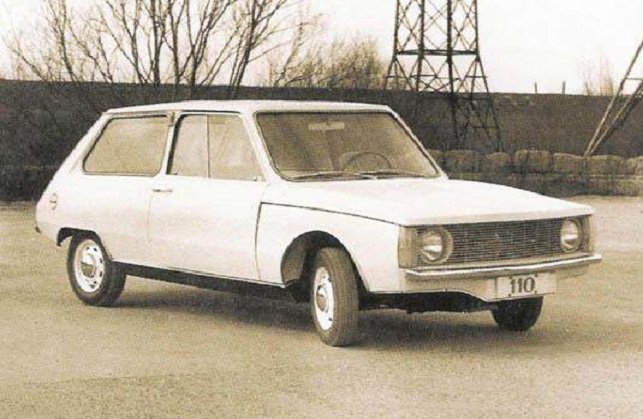
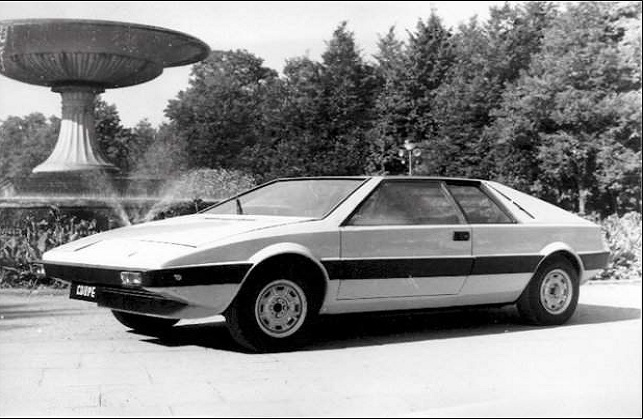

Syrena Sport | Warszawa 210 | Syrena 110 | Fiat 125 Coupe | FSO Wars
Syrena Sport
 Syrena Sport była prototypem polskiego samochodu sportowego, który zbudowany został pod koniec lat 50. XX wieku w Fabryce Samochodów Osobowych w Warszawie. Projektantem był Cezary Nawrot. Dwudrzwiowe coupé posiadało nadwozie z tworzyw sztucznych, opartym na stalowej, samonośnej płycie podłogowej. Źródłem napędu auta był czterosuwowy, dwucylindrowy silnik typu Boxer, chłodzony powietrzem. Silnik o pojemności 6983 umożliwiał rozwinięcie mocy 35KM przy 5000obr/min. Z modelu Syrena 100 przeniesiono skrzynię biegów oraz zawieszenie przednie. Ciekawym rozwiązaniem było zawieszenie tylnych kół, oparte na wahaczach wleczonych, drążkach skrętnych i niemalże poziomo umieszczonych hydraulicznych amortyzatorach oraz hydrauliczny napęd sprzęgła wraz z mechanizmem zmiany biegów w podłodze. Po prezentacji samochodu stał się natychmiast sensacją i był szeroko opisywany w polskiej prasie motoryzacyjnej, szczególnie w tygodniku „Motor” oraz pojazwiły się wzmianki w prasie zagranicznej. Niestety jedyny zachowany egzemplarz komisyjnie musiał zostać zniszczony.
Warszawa 210
 Warszawa 210 była prototypem polskiego samochodu osobowego z nadwoziem typu sedan, wykonanego przez Ośrodek-Badawczo Rozwojowy Fabryki Samochodów Osobowych w 1964 roku. Układ napędowy ze względu na ograniczone fundusze postanowiono skopiować z Forda Falcona. W prototypie Warszawy 210 zastosowano silnik R6 2,5 l o mocy 82 KM (60,3 kW), który był wzorowany na jednostce napędowej Forda. Nadwozie zostało jednak zaprojektowane i wykonane od podstaw pod przewodnictwem inż. Stanisława Łukaszewicza. Zaprojektowane nadwozie było nowoczesne. Ciekawym rozwiązaniem było umieszenie migaczy na obu krańcach maski pojazdu. Samochód nie został wprowadzony do produkcji masowej, gdyż rozpoczęto negocjacje z włoską firmą Fiat na zakup licencji Fiata 125.
Syrena 110
 Syrena 110 była prototypem pojazdu małolitrażowego stworzona przy współpracy Biura Konstrukcyjnego Przemysłu Motoryzacyjnego pod kierownictwem inż. Edwarda Lotha oraz konstruktorów w Fabryce Samochodów Osobowych na Żeraniu. Nowy samochód miał spełniać wiele kryteriów. Celem było zaprojektowanie nowoczesnego pojazdu z nadwoziem typu hatchback, w którym wygodnie mogłyby podróżować cztery osoby przy 350 kg bagażu oraz masie własnej pojazdu nie większej niż 720 kg. Auto miało rozpędzać się do 100 km/h w 15 s, zaś prędkością maksymalna miała być w granicach 125 km/h. Zużycie paliwa miała kształtować się w granicach 8 litrów na 100 km. W prototypie zastosowano bardzo interesujące i nowatorskie rozwiązanie techniczne, czyli dzieloną ramę przednią pozwalającą na demontaż całej przedniej części karoserii wraz z zespołem napędowym. Zawieszenie pojazdu miało mieć resorowanie na 4 spiralnych sprężynach, które współpracować miały z układem 2 wahaczy oraz stabilizatorem z przodu i pojedynczymi wahaczami z tyłu. Prace nad Syreną 110 ostatecznie porzucono ze względu na zakup licencji na Fiata 125p i Fiata 126.
Fiat 125 Coupe
 Fiat 125p Coupé był prototypem polskiego samochodu sportowego, który został opracowany w warszawskiej Fabryce Samochodów Osobowych w roku 1971. Bryłę nadwozia zaprojektował Zdzisław Wattson,zaś konstrukcję nadwozia opracowali wspólnie inż. Stanisław Łukaszewicz i inż. Czesław Piechur. Kabina pasażerska zapewniała miejsce na podróż dla czterech pasażerów. Samochód cechował się pojemnym bagażnikiem. Napędem pojazdu był silnik o pojemności 1500 cm3, w których zastosowano układ dwugaźnikowy, dzięki czemu moc wzrosła do 90KM. Skrzynia biegów była czterobiegowa, manualna. Opływowe kształty umożliwiały osiągać prędkości maksymalne około 170 km/h. Prototyp nigdy nie wszedł do seryjnej produkcji, chociaż budził duże zainteresowanie.